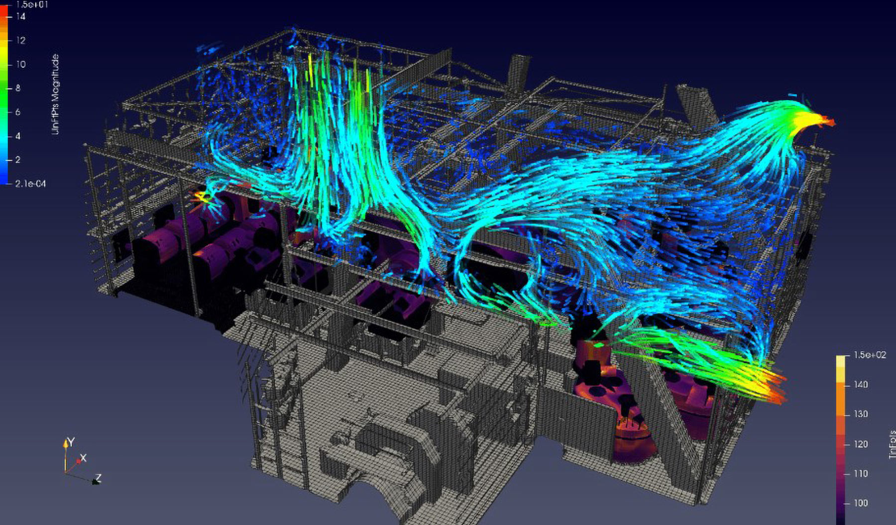

COMPANY
Mosaic’s transformational efforts have delivered more efficiencies and synergies than ever before. By successfully executing our strategy, we’ve created a stronger and more competitive company for years to come.
Mosaic’s ties to Saskatchewan go back more than 60 years, when the first viable potash production shaft at Esterhazy K1 was built. It was a bold move at the time, and one that launched the potash industry in the province.
Fifty years later, we developed a vision—and a strategy to achieve it—for the future of our potash business in Saskatchewan. We knew the critical link would be our long-term success at Esterhazy, and that K3 would be the cornerstone. In 2010, we approved a $3 billion investment to build K3 and secure this future for the next 50 years and beyond.
Esterhazy K3 is a mine of the future and a showcase for innovation. In addition, this impressive project is having a significant economic impact in the province.
On Feb. 16, 2017, we reached the potash zone 3,350 feet underground at K3. This marked a major milestone for the project itself and for shaft sinking in Saskatchewan as a whole. Within months, the K3 team began hoisting and conveying up to 800 tonnes of development potash per day. Since then, mine development progress has been steady and safe, with more than 90,000 tonnes hoisted as of March 2019. When complete, K3 will be capable of moving more than 19 million tonnes of potash a year.
Automation is a significant step change in underground potash mining that will deliver improved safety, reliability and asset utilization. The Potash business’ new Miner Automation Program is a template for successful innovation that will see less down time and more productivity of underground miners, driven by leveraging strategic partnerships within our company. In 2018, a 2-tiered approach to automation was developed to allow for a staged process for implementing technologies at all three potash shafts in Esterhazy.
Automation allows new technologies and proper application of proven systems to combine for more consistent and reliable production at a lower cost. Our vision is plant-wide integrated automated systems from mine to loadout.
Among the many innovative solutions our Phosphates business developed to improve safety and productivity in 2018, the Four Corners Mine team took action on two notable projects.
One of the challenges with draglines is keeping contaminants such as sand, dirt and other particles out of the phosphate mining process. When these contaminants get inside the draglines, the equipment is less likely to run reliably, which leads to higher safety risk for our operations. Traditionally, we use large fans to help ventilate the draglines and minimize the impact, but testing angles and speeds of multiple fans is time-consuming and costly to manage, since draglines cannot fully operate when testing. This is where innovation has become critical.
Today, instead of manually adjusting fans, an operator at Four Corners can test air flow on-screen—leading to safer equipment and saved time.
On the other side of draglines is the “pit gun” operator, the person responsible for turning matrix—a mixture of phosphate ore, clay and sand—into a watery mixture called slurry. The slurry makes it possible to transport the phosphate for separation at the beneficiation plant. The pit gun operator is normally on site and drives between draglines as the machines mine matrix. The scale of operations is massive, and an operator can spend 15 minutes or more in a vehicle with each transition.
The Four Corners’ team implemented a new technology that saves drive time and its inherent risks. Now, the operator can operate multiple pit guns and create slurry from a centralized, remote control center.
Mosaic is a safer and more efficient company as a result of these innovative solutions.

Name
Felipe Klemperer
Title
VP of Strategy & Business Development
Mosaic Fertilizantes
Years at mosaic
6
Location
São Paulo, Brazil
When we started our transformation journey, there were 800 ideas in queue that could help improve the business. Today, thanks to the active participation of employees at all levels of the organization, we have more than 1,600 initiatives to evaluate and potentially pursue. This is very good news for our company…
Felipe Klemperer
Paired with a growing demand for crop nutrients and competitive access to big players in agriculture, Brazil is important for the company’s long-term prosperity. In particular, Mosaic Fertilizantes’ presence in Brazil is very close to farmers, and as a result, we have first-hand access to understanding their evolving needs. We believe this proximity sets us apart from other fertilizer producers and allows Mosaic to continue strengthening our ability to meet grower needs.
Very much in line with our global sustainability priorities, our Brazil team is committed to advancing our key sustainability initiatives. Expect to see progress over the coming years in areas like water, food, education and local development.
In 2018, we delivered outstanding results—not only did we surpass our financial goals, but we significantly transformed Mosaic Fertilizantes into a much more innovative and competitive company. During the year, we took a close look at our organization, optimized our agreements with suppliers and contractors, and collaborated across teams to increase production using smart investments. Most importantly, we did this while simultaneously improving our environment, health and safety performance for the year.
We created a compelling culture shift across Mosaic Fertilizantes, largely driven by our extensive synergy and transformation teams. We engaged more than 400 of our talented colleagues to work on targeted synergies and invited them to identify and develop their own opportunities to improve the business. When we started our transformation journey, there were 800 ideas in queue that could help improve the business. Today, thanks to the active participation of employees at all levels of the organization, we have more than 1,600 initiatives to evaluate and potentially pursue. This is very good news for our company, and I’m looking forward to seeing the positive impact many of these ideas will have on safety and sustainability performance for years to come.
Reporting and transparency have been integral to Mosaic’s sustainability journey. For a full list of our voluntary reporting efforts, please visit our website. View our 2018 Sustainability Disclosure & GRI Index to learn more about our sustainability progress.